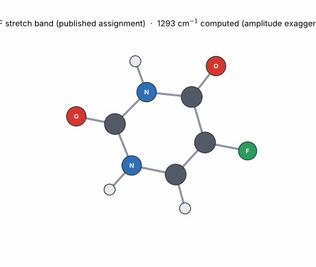

A cancer drug's infrared fingerprint, predicted on a computer and compared with the lab
The same result told at three depths. Pick the level that suits you. All three say the same thing, and every number comes from a real run.
A new AI-trained method predicted the infrared fingerprint of a cancer drug, and it lined up with the lab measurement, even from a deliberately bent starting shape.
Predicting how a drug behaves on a computer is far cheaper than testing it in a lab, but only if the method can be trusted. Skala is a recent method that uses machine learning to describe the physics of electrons. We tested it on 5-fluorouracil, a widely used cancer drug. We asked Skala to predict the drug's infrared fingerprint, the pattern of light a molecule absorbs as its atoms vibrate, and compared it with the fingerprint measured in a lab. The peaks fell in matching places, and the two strongest agreed within 4 units on a scale reaching 1800. We began from a deliberately distorted molecule, like the rough shapes produced in early drug screening, and Skala still settled on the same stable shape as from a normal start.
Key points
- Skala's predicted infrared fingerprint of the drug lines up with the one measured in the lab.
- A rough, bent starting shape still ends at the same stable shape.
- The result is a stable shape, and the checks are shown.
The vibrations that a new machine-learning-based computational method, Skala, predicts for the cancer drug 5-fluorouracil agree closely with the vibrations measured in a laboratory, even when the calculation starts from a deliberately distorted molecule.
A molecule absorbs infrared light at the frequencies at which its atoms vibrate, which gives a pattern, or spectrum, that works as its fingerprint. We used Skala, a recently developed method that uses machine learning to describe how electrons hold atoms together, to predict this fingerprint for 5-fluorouracil, a widely used cancer drug. We compared it with a published laboratory measurement made on the drug frozen in solid argon, an inert gas, at about −267 °C. Frozen like this, each molecule is held still and the peaks are sharp.
After one common correction factor, which accounts for a known, systematic overestimate in this kind of calculation, the predicted frequencies differed from the measured ones by 11 units on average. Frequencies are given in wavenumbers (cm⁻¹), and the compared range runs from 300 to 1800. The two strongest absorptions, from the drug's two carbon–oxygen double bonds, agreed within 4 units.
Drug-screening workflows often supply rough molecular shapes, so we also began from shapes distorted on purpose. The calculation relaxed each of them to the same stable shape as from a normal start. The vibrations were computed from the shape relaxed from the moderately distorted start.
Key points
- The computed infrared spectrum of the drug is consistent with the laboratory spectrum after one correction factor.
- Starting shapes distorted on purpose, as a stand-in for rough screening shapes, all relax to the same stable shape.
- The computed shape is stable (no unstable motions), and the calculation's internal consistency checks are shown in the supplement.
Skala-1.1 harmonic infrared frequencies of 5-fluorouracil are consistent with the argon-matrix spectrum (25 bands; mean absolute error 11 cm⁻¹ after one scale factor of 0.974), from a geometry optimized starting 3.1 eV above the minimum.
We assess Skala-1.1 on 5-fluorouracil (diketo form T1), a clinically used anticancer drug. Geometry optimizations were started from a normal structure and from structures deformed by 3.1 and 6.4 eV, to mimic rough screening geometries. All three starts reach one structure (within 0.0072 Å and 0.51 meV of the normal-start result), a true minimum at def2-TZVP with zero imaginary frequencies. Harmonic frequencies from the 3.1 eV-start geometry are consistent with the 6 K argon-matrix IR spectrum (Ivanov et al. 2017): mean absolute error 11 cm⁻¹ over 25 bands after one scale factor, both C=O stretches within 4 cm⁻¹, intensity rank correlation 0.86.
Key points
- The computed IR spectrum is consistent with experiment after a single scale factor (0.9736, fitted on the same 25 bands).
- Optimizations from 3.1 and 6.4 eV deformed starts converge to the same minimum as from a normal start. The IR was computed from the 3.1 eV start only.
- Zero imaginary frequencies; the Hessian passes symmetry and translation-invariance checks (supplement).
the final shape is a true resting point
computed against measured
after one correction factor, on a scale reaching 1800
the drug's two C=O bonds
The whole story in one picture


What is an infrared fingerprint?
Box 1
Atoms in a molecule never rest: bonds stretch and bend like balls on springs. Each motion has its own pitch, and the molecule absorbs infrared light at exactly those pitches. Together the absorptions form a pattern that is unique to the molecule, its infrared fingerprint.
A lab measures it with an infrared spectrometer. A computer can predict it from physics alone. If the prediction lines up with the measurement, the computer method is capturing how the molecule's atoms are held together.
Watch the drug vibrate
Three of the drug's 30 computed vibrations: its two C=O stretches (the strongest peaks) and the stretch of its C–F bond, the bond that makes it 5-fluorouracil.



The motion is exaggerated so it can be seen. More animations are on the figures page.
The fingerprint, computed against measured


The infrared fingerprint that Skala predicts for the cancer drug 5-fluorouracil (upward bars) lines up with the one measured in the lab (downward bars). The two tallest peaks, both from the drug's C=O groups, agree within 4 units.
The infrared fingerprint computed with Skala for the cancer drug 5-fluorouracil (upward bars) is compared with the fingerprint measured in a laboratory on the drug frozen in solid argon (downward bars). After one correction factor, peak positions differ by 11 units on average (wavenumbers, cm⁻¹), and the two strongest peaks, from the drug's two carbon–oxygen double bonds, agree within 4 units. The calculation started from a molecule distorted on purpose.
Technical legend
Computed infrared spectrum of 5-fluorouracil (diketo form T1) compared with the argon-matrix spectrum. (a) How an IR spectrum arises (schematic). (b) Harmonic IR spectrum from Skala-1.1 / def2-TZVP on the Skala-optimized geometry (optimization started 3.1 eV above the minimum; zero imaginary frequencies), frequencies multiplied by one scale factor of 0.9736 (upward bars, km/mol), against the 6 K argon-matrix spectrum of Ivanov et al. (2017) (downward bars, relative intensity). The two C=O stretches and the C–F stretch band are marked. (c) Summary: 25 vibrations between 1800 and 300 cm⁻¹ compared; mean absolute error 11 cm⁻¹ after scaling (the unscaled values are about 21 cm⁻¹ high on average, about 46 cm⁻¹ above 1000 cm⁻¹); both C=O bands within 4 cm⁻¹; intensity rank correlation 0.86. Bands are paired by frequency order; the largest single error after scaling is 29 cm⁻¹ (a low-frequency mode); N–H stretches are not compared. The scale factor was fitted on the same 25 bands.
The drug's two strongest peaks land within 4 units of the lab values.
Scientific: after scaling, the two C=O stretches are 1764.5 vs 1761.2 and 1740.3 vs 1742.0 cm⁻¹ (computed vs measured).
Why start from a bent shape?
In drug screening, thousands of molecules are drawn quickly with cheap tools, so their shapes are rough. A good method has to cope with a rough starting shape, not only a perfect one.
- Screening makes many shapes fast, so each one is approximate.
- Skala then relaxes the shape to its resting form.
- The test: does a rough start still give a trustworthy answer?
Inputs from a screening workflow (force-field, semi-empirical or machine-learned conformers) are approximate geometries. A usable refinement step must relax them to the same minimum regardless of the start. We therefore began from deliberately deformed 5-fluorouracil structures, 3.1 and 6.4 eV above the final energy (Skala-1.1 / def2-SVP), and checked that the optimized structure and its vibrations behave as for a clean start.
- Geometry: all three starts end at one structure (within 0.0072 Å and 0.51 meV of the normal-start result).
- Vibrations: computed from the 3.1 eV start; consistent with experiment.
Box 2
A method that only works from a perfect starting shape is of limited use in screening. We therefore began from deliberately distorted versions of 5-fluorouracil, up to 6.4 eV above its most stable shape, as a stand-in for rough screening geometries. The optimization ended at the same stable shape every time.
Honest framing: these bent starts were made by deforming the molecule on purpose. They mimic the rough geometries of a screening pipeline; they are not taken from a real screening run.


A bent start, a good fingerprint.
Scientific: optimization from a deformed start gives an IR spectrum consistent with experiment.
What to take away, in order
- 1
The computed infrared fingerprint of the drug is consistent with the lab spectrum
25 vibrations between 1800 and 300 cm⁻¹; 11 cm⁻¹ typical error after one scale factor; both C=O bands within 4 cm⁻¹; strong and weak peaks in the same order (rank correlation 0.86).
- 2
It works from a deformed start, as a screening pipeline would supply
The infrared comes from an optimization started 3.1 eV above the minimum. Separately, optimizations from the normal start, 3.1 eV and 6.4 eV all ended at one structure. The 6.4 eV fact is about the shape only; the infrared was not computed from that start.
- 3
The result is a true resting shape
Zero imaginary frequencies at the larger basis set. This is what makes the infrared comparison meaningful.
- 4
The supervised optimizer finished each start in minutes
23, 64 and 72 gradient evaluations (4 to 14 minutes of optimization on one cloud GPU) for the normal, 3.1 eV and 6.4 eV starts. What the AI agent did →
Every claim, and what backs it
| Claim | Number | Where it comes from |
|---|---|---|
| Computed IR is consistent with the argon-matrix spectrum | 11 cm⁻¹ | Mean absolute error over 25 bands after one scale factor (0.9736, fitted on the same bands). data/comparison/5fu_T1_ir_vs_argon_matrix.csv |
| Both C=O bands agree | ≤ 4 cm⁻¹ | 1764.5 vs 1761.2 and 1740.3 vs 1742.0 after scaling |
| Strong and weak peaks come in the same order | 0.86 | Rank correlation of intensities, computed vs measured |
| Zero imaginary frequencies | 0 | Hessian at def2-TZVP, T1. data/module2_T1/thermo.json |
| IR computed from a 3.1 eV bent start | 3.1 eV | Module 2 started from the Run 2 structure |
| Starts up to 6.4 eV reach one structure | ≤ 0.0072 Å | Module 1, Runs 1 to 3 (geometry only, def2-SVP): Run 2 is 0.0072 Å and 0.51 meV from Run 1; Run 3 is 0.0051 Å and 0.29 meV |
| IR computed from the 6.4 eV start | – | Not run. Not claimed. |
Fair limits to read with the headline. One molecule. Harmonic approximation. The lab reference is a cold argon matrix (6 K), not a gas or a solution. Bands are paired by their order. The scale factor was fitted on these same bands. The N–H stretches are not compared, and the lowest modes are the least certain. No other method was run on this drug, so this report says nothing about whether Skala-1.1 is more or less accurate than other methods. Skala-1.1 is described in a preprint that has not been peer reviewed.
Next: every number with its source file, the ideas in pictures, or what others could build on this.